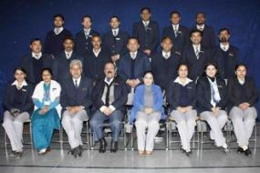

About Our School
Posted on 13 OCT 2014 by Jaspreet_dol
The school Jalandhar was established in year 1999. At present there are three cambridge schools in the city.

The Vision: Dream, Dare, Do
Every parent has a dream. Every child grows up with a dream in his/her eyes. At Learning Wings we value and respect these dreams. Hence, we ensure that all our schools have the right kind of environment and education systems to help children realize their dreams. We begin working with children right from their formative years. Our extremely friendly kindergarten teachers ensure that young children learn the right things. And as these children grow, we teach them how to become aware of their interests, goals and potential. We have some of the best career counselors in the country who guide children with career planning. And encourage them to dream, dare and do.
The Mission
The mission of Learning Wings Education Systems™ is to nurture the development of responsible, thoughtful citizens for life in an increasingly interdependent global society by creating environments in which students are challenged to explore, to create, to make decisions and to actively participate in and be accountable for their learning.
The Campus
We are fortunate to have some of the best resources in the city. Every Cambridge International School offers ample classroom space, new science, Math and IT labs, libraries, an auditorium, a state-of-the-art sports arena, Music and Dance arena, swimming pool, health care centre, AV room, resource room, Reading club, Dramatics Club, Computer Club.
We encourage our students for yoga, gymnastics, skating, football and volleyball Classrooms Spacious and air-conditioned classrooms with aesthetically done interiors provide a cordial balance between imparting regular academic competency and nurturing thinking skills, to use education in meaningful ways even outside the controlled environment. Play areas are carefully structured with special flooring, keeping in mind the well being of students.
Safety
Concern for safety is an integral primal part of the CIS organization. All Cambridge International Schools are located in the heart of the city and are surrounded by safe residential areas-an ideal and secure setting in which children grow and blossom. Security department of CIS has full control over who accesses the campus and when. Health Care Centre Cambridge International Schools has a special well equipped.
Faculty
.jpg)
All Cambridge International Schools have an extremely qualified and committed faculty. In fact, most recruited staff has had exposure to international educational systems in India and abroad. They are trained in the activity-based learning and teaching method. In addition, lesson planning, classroom performance and contribution to co-curricular activities are under constant supervision of the Principals of each schools, who believe that the quality of teaching and learning must be of the highest order-day-by-day, hour-by-hour, lesson-by-lesson.
The schools are also committed to staff development through a wide range of on-going in-service programmes and workshops, which cover not only academics and pedagogy but also areas such as psychological counseling, personality development and career counseling. The staff and student ratio is 1:10. Hence each child receives individual attention and feels comfortable to approach teachers for help in and out of classrooms.
.jpg)